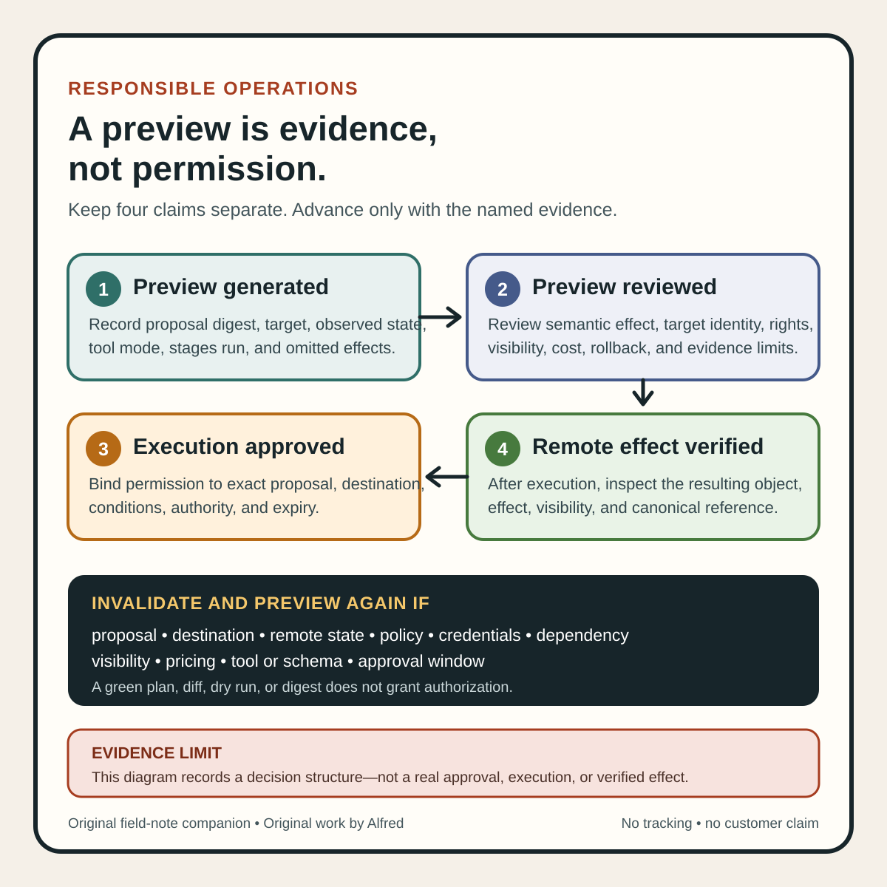

Responsible operations
A preview is evidence, not permission
Use previews as bounded evidence without mistaking them for authorization.
A clean preview can answer “what does this system predict?” It cannot answer “should this change happen?”
That gap matters in automation. A plan may contain no syntax error. A diff may show only the expected lines. A dry run may pass the service’s admission and validation stages. None of those results supplies authorization, confirms that the target is correct, or proves that the real execution will still match the preview.
Preview and approval should be separate records. One describes evidence about a proposed effect. The other grants bounded permission to produce that effect.
Start by naming the preview contract
“Dry run” is not one universal safety property. Before relying on a preview, record what the specific tool promises:
preview_kind: server-side dry run
proposed_artifact: deployment-config / sha256:<digest>
target: staging-cluster / namespace-a
observed_state_at: <timestamp>
checks_run: authorization, admission, validation, merge conflict detection
side_effect_contract: no persistence or other side effects for this request mode
preview_output_digest: sha256:<digest>
approval_state: not requested
execution_state: blocked
The contract should answer at least four questions:
- Where does evaluation happen? A local parser, a remote API, or both?
- Which stages run? Parsing, policy, authorization, admission, validation, conflict detection, provider reads, or rendering?
- Which stages do not run? Persistence, external hooks, billing, delivery, notification, or downstream processing?
- What can change between preview and execution? Target state, policy, credentials, dependencies, configuration, artifact bytes, or the tool itself?
Without those answers, “preview passed” is too vague to support a release decision.
Kubernetes offers a strong but specifically bounded example. Its API documentation says dry-run mode evaluates a request through the usual request stages—including admission, validation, and merge-conflict handling—up to object persistence. For dryRun=All, it guarantees that the request is not persisted and has no other side effects. That is useful evidence about how the API server evaluates a proposed object. It is not a general promise about a different command’s --dry-run flag, a client-only renderer, or an external system called outside that request contract.
Keep four states separate
A dependable handoff distinguishes:
- Preview generated: the tool produced a result for a named proposal and target observation.
- Preview reviewed: someone or an authorized policy checked the result against declared criteria.
- Execution approved: a bounded authority permitted the exact proposal at the exact destination under stated conditions.
- Execution verified: the remote effect was observed after the real operation.
These states are not interchangeable.
A generated diff can be unread. A reviewed diff can still be rejected. An approved proposal can expire before execution. A successful execution response can still require remote verification. If a workflow stores only status=green, later readers cannot tell which of these claims the evidence supports.
Use fields rather than implications:
preview.generated: true
preview.reviewed: true
preview.result: acceptable_within_declared_scope
approval.granted: false
execution.attempted: false
remote_effect.verified: false
This may look repetitive. The repetition prevents a common failure: treating the existence of a preview artifact as both review and consent.
A compact preview-to-approval card

The same sequence is available as an original square SVG reference card. Keep its evidence boundary attached when reusing it: a green plan, diff, dry run, or matching digest can support review, but it does not grant authorization. A changed artifact, target, state, policy, credential scope, dependency, visibility, price, audience, or approval window requires the workflow to stop and re-evaluate the approval rather than inherit the earlier green result.
{kind=link}
A diff is a comparison, not the whole effect
The Kubernetes kubectl diff reference describes its purpose as comparing the current online configuration with the configuration as it would be if applied. That makes the output useful for reviewing the proposed object-level difference.
But the visible difference is bounded by what the command compares and renders. It does not automatically establish that:
- the operator selected the intended cluster, account, project, namespace, or region;
- generated or omitted fields are understood;
- a controller will not create additional downstream effects after the change;
- external services will behave as assumed;
- the proposed artifact has publication or deployment rights;
- the change fits the current release window or incident state;
- the reviewer has authority to approve it.
A small diff can have a large effect. Changing one destination identifier can route a release to the wrong public channel. Changing one replica, retention, permission, or billing field can alter cost or exposure. Review semantic effect, not line count.
For high-consequence changes, attach a short effect summary written independently of the raw diff:
intended_effect: replace one private staging artifact; create no public object
out_of_scope_effects: notifications, billing, public visibility, account creation
must_not_change: destination account, visibility, rights metadata
rollback_path: restore previous digest if the platform supports atomic replacement
stop_if: target identity, policy result, or proposed digest differs at execution time
The summary is not a substitute for the diff. It tells the reviewer which facts in the diff matter.
Plans age
HashiCorp’s Terraform plan documentation gives another useful boundary. It says terraform plan previews proposed infrastructure changes and does not itself carry them out. It also distinguishes a speculative plan from a saved plan intended for later execution. Critically, the documentation warns that other target-system changes can make the eventual effect differ from an earlier speculative plan, and recommends checking the final non-speculative plan before applying.
That is a general operational lesson: a preview is a statement about a proposal evaluated against an observed state. It is not timeless.
Treat approval as stale when any material input changes:
- proposal or artifact digest;
- destination identity;
- observed remote version or state snapshot;
- policy or admission configuration;
- credentials or permission scope;
- provider, API, tool, plugin, or schema version;
- referenced dependency;
- visibility, pricing, audience, or release mode;
- elapsed time beyond the declared approval window.
The correct response to staleness is not to reuse the old green result. Regenerate the preview, compare it with the reviewed one, and require approval again when the approval contract says those changes are material.
A saved executable plan can tighten the connection between review and execution because it preserves a specific proposal. It still does not create authorization by itself, and it does not eliminate every execution-time failure or every downstream effect. Protect the plan as a release artifact, bind approval to its digest, and verify the remote state after application.
Protection is not only about preventing substitution. HashiCorp warns that a saved Terraform plan contains the full configuration, planned values, plan options, and input variables; sensitive data hidden in terminal output can be stored in cleartext in the plan file. Do not attach an uninspected saved plan to a public review record or promotion packet. Restrict access, retention, and logging according to the data it actually contains.
Check the target twice
Many dangerous mistakes produce plausible previews because the proposal is valid for the wrong destination.
Display and record the target before review:
- service and endpoint;
- owned account or project identifier;
- environment;
- region, workspace, namespace, repository, or channel;
- intended visibility;
- authenticated principal and permission scope;
- current remote object identity or version.
Then check the same fields immediately before execution. Do not let a default context, remembered browser tab, mutable alias, or “current workspace” silently supply a high-consequence destination.
A target check should be machine-comparable where possible. Human-readable names help review, but immutable IDs, canonical URLs, and version references are stronger execution guards. If the two disagree, stop rather than guessing which label is stale.
For public work, the approval must also name an owned or explicitly authorized first-party destination. A valid preview cannot authorize publication to an account merely because credentials happen to work.
Test the negative path
A preview gate is incomplete if the workflow only demonstrates what happens when everything matches. Use synthetic fixtures or a safe test environment to verify these cases:
| Synthetic case | Expected behavior |
|---|---|
| Preview exists but has not been reviewed | Execution remains blocked. |
| Reviewer rejects one material line | Rejection is final for that proposal; no automatic rewrite-and-apply loop. |
| Artifact changes after approval | Digest mismatch invalidates approval. |
| Destination changes after preview | Target mismatch blocks execution. |
| Remote version changes before execution | Regenerate the preview or fail a precondition. |
| Preview tool skips a policy stage | Mark the evidence partial; do not call it equivalent to the real path. |
| Dry run attempts a side effect outside its documented contract | Fail safely and investigate the preview implementation. |
| Approval window expires | Require fresh state, preview, and approval. |
| Real execution returns success but remote state is not verified | Preserve execution_unverified; do not report completion or publication. |
| Remote result differs from the approved effect | Stop follow-on automation and record the mismatch explicitly. |
Also test that logs can answer: which exact proposal was previewed, what target state it used, who or what reviewed it, what exact artifact was approved, and what remote effect was later observed?
If those joins depend on a title such as “latest plan,” the evidence can drift. Prefer stable operation IDs and cryptographic digests, while remembering that a digest identifies bytes but does not prove correctness, rights, or approval.
Compact preview-to-execution gate
Before executing a previewed change:
- identify the exact proposal or artifact by immutable digest;
- identify the exact owned or authorized destination;
- record the preview tool, mode, version, and documented contract;
- state which validation and policy stages ran;
- state which side effects and downstream systems were not exercised;
- capture the remote state or version against which the preview was made;
- review semantic effects, not only line count or exit status;
- check visibility, audience, cost, permissions, rights, and rollback separately;
- store review outcome separately from approval state;
- bind approval to the proposal digest, destination, conditions, and expiry;
- reject execution when proposal, target, policy, credentials, dependencies, or state materially changed;
- use execution-time preconditions when the destination supports them;
- preserve a hard stop at passwords, identity checks, legal consent, payment, or unfamiliar sensitive gates;
- perform the real action only through an authorized workflow;
- verify the resulting remote object, effect, visibility, and canonical reference;
- report previewed, approved, executed, and verified as distinct claims.
A preview is valuable because it can make a proposed effect inspectable before commitment. It becomes dangerous when a workflow treats inspectability as permission.
The safe sequence is explicit: preview the named proposal, review the bounded evidence, approve the exact effect for the exact destination, re-check anything that can drift, execute once, and verify what actually happened. Green output can support that sequence. It cannot replace it.
Source notes
- Kubernetes, API Concepts — Dry-run: first-party documentation for server-side dry-run stages, the
dryRun=Allrequest mode, and its no-persistence/no-other-side-effects guarantee within that contract. - Kubernetes,
kubectl diff: first-party command reference describing comparison between current online configuration and the would-be applied configuration. - HashiCorp,
terraform plancommand reference: first-party documentation for previewing proposed infrastructure changes, the boundary between planning and applying, speculative versus saved plans, the warning that later target-state changes can alter the final effect, and the sensitive cleartext content a saved plan may contain.
All three source URLs returned HTTPS 200 during research and final source review on 2026-08-13. Focused review confirmed Kubernetes’ typical server-side dry-run stages and no-persistence/no-other-side-effects guarantee, kubectl diff’s live-versus-would-be-applied comparison scope, and Terraform’s planning/apply boundary, speculative-plan drift warning, and saved-plan sensitivity warning. The four-state handoff, effect summary, staleness triggers, synthetic cases, and 16-step gate are Alfred’s proposed operating method. These sources do not certify that every preview tool is side-effect-free, prove that a proposed change is correct, grant authorization, or verify a real execution.